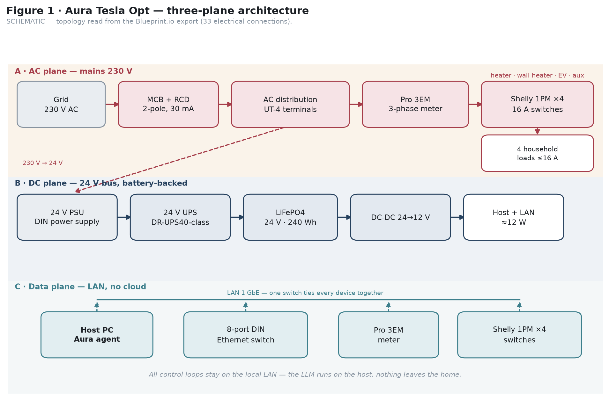
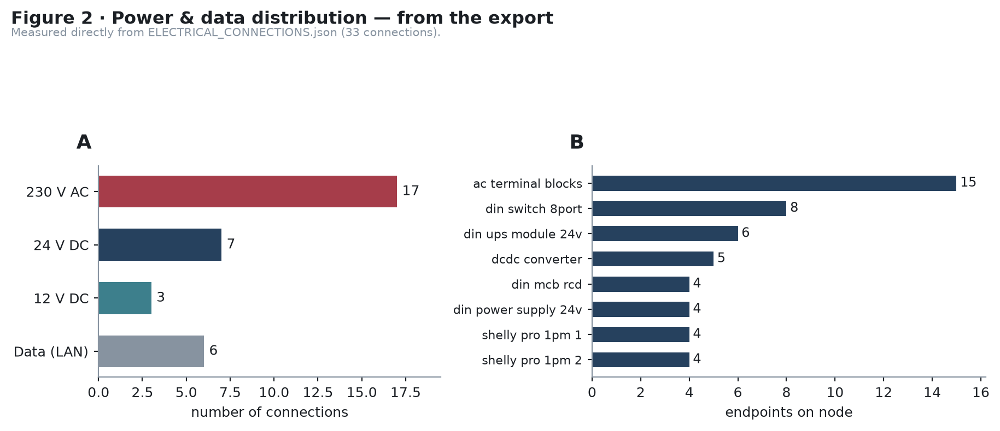
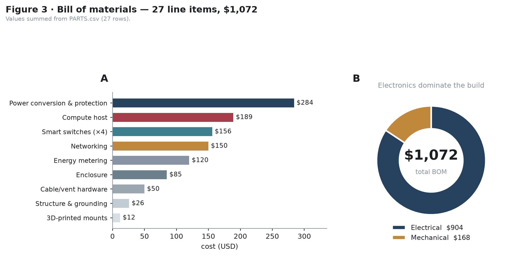
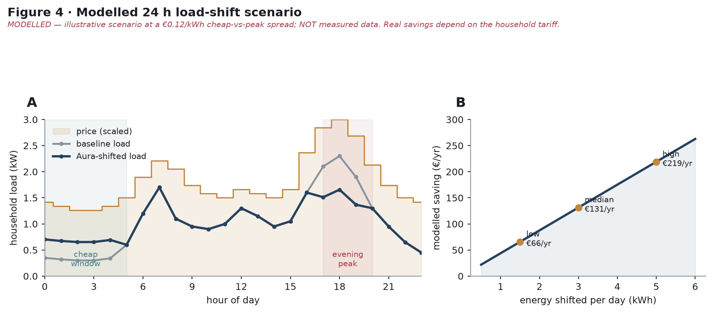

FIGURES · ABSTRACTS · SOURCE-BACKED REPORTS
The design
in figures.
The supplied abstract reports use the complete figure set: architecture, distribution, BOM cost and modelled load shift.

Reports generated from the supplied abstracts
Full design, scalability and delivery report →
Eight pages with English and Serbian abstracts, operating model, scaling plan, economics, delivery phases and all figures.
Design report →
Five-page abstract and operation report with the core design evidence and figure set.
Included figures

Power and data distribution.

BOM cost and part split.

Modelled 24-hour load shift.
AC, DC and local data planes.
Evidence label: schematic and BOM values are traced to the supplied exports. Load-shift and savings panels are explicitly modelled, not field measurements. Local operation means data can remain inside the premises when the deployment uses a private network without a cloud relay; verify the actual policy for each installation.